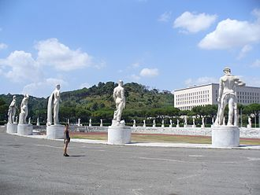

Association football is the most popular sport in Rome, as in the rest of the country. The city hosted the final games of the 1934 and 1990 FIFA World Cup. The latter took place in the Olympic Stadium, which is also the shared home stadium for local Serie A clubs S.S. Lazio, founded in 1900, and A.S. Roma, founded in 1927, whose rivalry in the Derby della Capitale has become a staple of Roman sports culture.[150] Footballers who play for these teams and are also born in the city tend to become especially popular, as has been the case with players such as Francesco Totti and Daniele De Rossi (both for A.S. Roma), and Alessandro Nesta (for S.S. Lazio). Atletico Roma F.C. is a minor team that played in Lega Pro First Division until 2012; its home stadium was Stadio Flaminio.
Rome hosted the 1960 Summer Olympics, with great success, using many ancient sites such as the Villa Borghese and the Thermae of Caracalla as venues. For the Olympic Games many new structures were created, notably the new large Olympic Stadium (which was also enlarged and renewed to host qualification and the final match of the 1990 FIFA World Cup), the Villaggio Olimpico (Olympic Village, created to host the athletes and redeveloped after the games as a residential district), ecc. Rome made a bid to host the 2020 Summer Olympics but it was withdrawn before the deadline for applicant files.[
Further, Rome hosted the 1991 EuroBasket and is home to the internationally recognized basketball team Virtus Roma. Rugby union is gaining wider acceptance. Until 2011 the Stadio Flaminio was the home stadium for the Italy national rugby union team, which has been playing in the Six Nations Championship since 2000. The team now plays home games at the Stadio Olimpico because the Stadio Flaminio needs works of renovation in order to improve both its capacity and safety. Rome is home to local rugby union teams such as Rugby Roma (founded in 1930 and winner of five Italian championships, the latter in 1999–2000), Unione Rugby Capitolina and S.S. Lazio 1927 (rugby union branch of the multisport club S.S. Lazio).
Every May, Rome hosts the ATP Masters Series tennis tournament on the clay courts of the Foro Italico. Cycling was popular in the post-World War II period, although its popularity has faded. Rome has hosted the final portion of the Giro d'Italia three times, in 1911, 1950, and 2009. Rome is also home to other sports teams, including volleyball (M. Roma Volley), handball or waterpolo.